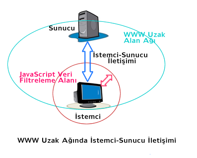

JavaScript Temelleri
Bölüm 1
Başlangıç Bilgileri
Bölüm 1 Sayfa 2
1.2 - JavaScript Programlama Dilinin Kullanımı
1.2.1 - JavaScript Programlama Dilinin Kullanım Alanları
JavaScript programlama dili, tümü ile nesnelerle tasarlanmış, modern ve son derece kullanıcı dostu bir programlama dilidir. Genel amaçlı programlar için, C++ ve Java kadar etkindir. Yazılmış olan kodların okunması çok kolaydır. Sadece güvenlik açısından disk dosyalarına erişim sağlayamaz. Buna gereksinme olduğunda, JavaScript programlama dilinin Internet Explorer de desteklenen diyalekti olan JScript kullanılarak disk dosyalarına da erişilebilir. JavaScript programlama dili programlarını basit yönden çözümlemek isteyen programcı olmayan kullanıcılar tarafından, basit bir prosedüral dil gibi kullanılabilir. Fakat, aslında, JavaScript programlama dili, nesneye yönelik programlamayı tam olarak destekleyen, modern ve etkin bir programlama dilidir.
JavaScript programlama dili, unicode karakterlerini tam olarak destekler. Tüm program adımları, değişken fonksiyon ve nesne isimleri türkçe ve tüm yerel diller kullanılarak verilebilir.
JavaScript programlama dili, son derece geniş ve zengin bir programlama dilidir. Bu dil, her türlü matematik işlemlerin, tarih saat değerlerinin, karakter dizigilerinin, düzenli işlemlerin kolaylıkla yapılabilmesini sağlayan genis ölçüde öntanımlı nesneler ve metotlar içerir.
JavaScript programlama dili, değişkenlerin kullanılmadan önce tanıtılmalarını gerektirmez. Değişkenlerin tipleri kullanıcı tarafından önceden belirlenmez. Otomatik çöp toplayıcısına sahiptir, yani, kullanımı tamamlanmış program öğeleri, bellekten otomatik olarak kaldırılır.
JavaScript programlama dili, web sayfalarına konuk olarak kullanılır. Çıktılarının görüntülendiği sayfalar, web sayfalarıdır. Bu sayfalar, günümüzde çok gelişmiş (X)HTML işaretleme dili ve CSS stil programlarının birlikte kullanımı ile çok renkli, mültimedya destekli giriş/çıkış sayfaları haline getirilebilir. Günümüzde, (X)HTML sayfaları, bilgisayar programcıları için, en gözde giriş/çıkış ortamı haline gelmiştir.
JavaScript programlama dili, web sayfalarına konuk olarak kullanılır. Bu sayfalar, istemci veya sunucu üzerinde bulunabilir. Bu nedenle ilk olarak istemci/sunucu yapılanmasını daha yakından inceleyeceğiz.
1.2.2 - Sunucu-İstemci Etkileşimi
WWW (world Wide web) tüm Dünyayı, hatta tüm Galaksiyi kapsayan bir uzak ağ (Wide Area Network) olarak tanımlanmıştır. Bu ağın üzerinde bulunan sunucularda bulunan belgelerin indirilmesi için, aynı ağa bağlanan istemiler, istekte bulunur. Bu şekilde oluşan sunucu/istemci iletişimi ile, sunucudaki belgenin bir kopyası, istemciye indirilir ve isteemcide öngörüldüğü şekilde işlenir. Bu işlemler, sunucuya veri iletimini de kapsarsa, kullanıcının girdiği veriler, önce JavaScript prograı ile kontrol edilir, uygun olmayan verilerin kullanıcı tarafından yeniden girilmesi istenir. Yeniden kontrol edilir ve sadece kontrolden geçebilen verileri sunucuya gönderir. Bu şekilde sunucunun yapması gereken işlemler büyük ölçüde azaltılmış ve iletişim süresinde azalma sağlanır. Sunucu/İstemci iletişimi aşağıdaki şemada görülmektedir.

Yukarıdaki şemada da görüldüğü gibi, JavaScript, örnek olarak, kullanıcıların girdiği form verilerinin doğrulanmasını üstlenerek sunucuya sadece doğrulanmış verilerin gitmesini sağlar ve sunucunun yükünü azaltır.
JavaScript programlama dili ayrıca, istemci-sunucu iletişiminde veri filtreleme dışında, istemci üzerinde mouseover etkileri gibi sayfaya hareket veren etkiler sağlayabilir, kullanıcı etkileşimini tamamen üstlenir ve istemci üzerinden veri alarak, matematik işlemler yaptırabilir ve sonuçları istemci üzerindeki web sayfalarına yazdırabilir. Her türlü programlama işlemlerini yaptırabilir ve üstelik tamamen ücretsizdir.
1.2.3 - JavaScript Programlama Dilinin Güvenlik Önlemleri
JavaScript Programlama dilinin kullanıcı bilgisayarına zararlı kod yerleştirmesinin önlenmesi için kesin önlemler alınmıştır. Bunlardan ilki, Aynı Kaynak Kuralı dır. Bu kurala göre, JavaScript ağ üzerinde aynı bölge (domain) de olmayan hiçbir bilgisayara çıktı veremez. Yani web üzerinden istemci bilgisayarına cookie (basit küçük bilgiler) dışında hiçbir şey yazılamaz.
JavaScript bilgisayar hiçbir dosyalama işlemini desteklemez. ECMA-262 standartlarında hiçbir dosyalama işlemi bulunmaz. Buna karşın, Microsoft Internet Explorer belge çözümleyicisinde desteklenmekte olan JavaScript dialekti olan JScript, ECMA-262 uyumlu olmanın yanısıra dosyalama işlemlerini de desteklemektedir. Fakat JScript, sadece IE üzerinde çalışmakta ve başka hiçbir belge çözümleyicisi tarafından desteklenmemektedir. Özetle, ECMA-262 standardı JavaScript (ECMAScript) kullanımı son derece güvenlidir.
1.2.4 - JavaScript Programlama Dilinin Çekirdek, BOM ve DOM Bölümleri
JavaScript Programlama Dili, üç bölümden oluşur. Bunlar,
olarak adlandırılmaktadırlar.
Çekirdek (CORE) kısmı, JavaScript programlama dilinin değişken kullanımı, fonksiyonların yazımı gibi, temel öğelerinin tanımlandığı bölümdür. Bu bölüm, ECMA tarafından, ECMA-262 olarak standartlaştırılmış, ve ECMAScript olarak tanımlanmıştır.
Belge Çözümleyicisi Nesne Modeli, JavaScript programlama dilinin belge çözümleyicisi içinde konuk olmasınından kaynaklanan ve belge çözümleyicsinin sağladığı öntanımlı özellik, metot ve nesnelerden oluşur. Bu öntanımlı öğeler, çekirdek öğelerine eklenerek kullanıcının erişebileceği öntanımlı öğelere katkıda bulunurlar. Belge çözümleyici kaynaklı öğeler, istemci tarafı JavaScript veya kısaca Belge Çözümleyici Nesne Modeli (Browser Object Model) (BOM) olarak adlandılır ve window nesnesinin alt nesnelerini oluştururlar. BOM yöntemleri, yeni pencerelerin açılması (Pop-Up Pencere) ve pencerelerle ilgili işlemlerin yapılmasının sağlanması için belge çözüleyicilerle ilişki kurulmasını sağlayan yöntemleri kapsamaktadır. Bu yöntemler, tamamı ile belge çözümleyicisine özel metotlar olduğundan, bugüne kadar, belge çözümleyicileri sağlayan şirketler arasında bir uyum sağlanarak standartları oluşturmak olanağı bulunamamıştır. Bu konuda, çabalar sürmektedir. Genel olarak, programların en çok kullanılan belge çözümleyicilerde sorunsuz olarak desteklenebilmesi için, ortak olarak desteklenen öğelerin kullanımı ile sınırlı programlar yazılmaktadır. Günümüzde, en çok kullanılan belge çözümleyiciler, Intenet Explorer ve FireFox olduğundan, Internet Explorer ve FireFox tarafından ortak olarak desteklenen yeterli sayılabilecek kadar öğe bulunmaktadır. İleride, istemci tarafı Javascript yöntemlerini inceleyeceğiz. Bu çalışmada ortaklaşa desteklenebilen öğeleri belirleyeceğiz ve yazdığımız programların olabildiğince geniş destek bulabilmesi için bu yöntemlerle sınırlı kalacağız.
Belge Nesne Modeli (Document Object Model) (DOM), window nesnesinin bir alt nesnesi olan document nesnesinin metotlarını kapsamaktadır. Bu metotlar, web belgesinin içeriğindeki elemanlara erişim, bu elemanların görüntüsünü değiştirmeye, yeni CSS stil kuralları yaratmaya, yeni olay yöneticileri oluşturmaya veya eski olay yöneticilerine yeni görevler yüklemeye yönelik araçlardan oluşmaktadır. Bir web sayfasını oluşturan elementlar, prensip olarak standart olduğundan, JavaScript programlama dilinin bu ksmının da konuk eden belge çözümleyicine bağlı olmaması gerekir. Bu düşünce doğru olmakla beraber ancak yeni olarak ortak standartlar geliştirilebilmiş ve daha da kötü olarak, bu standartların ancak az bir kısmı uygulamadaki belge çözümleyicilerce desteklenebilmektedir. Burada önemli olan standartın olması değil, var olan standarta sağlanan gerçek destektir. JavaScript programlama dilinin web belgesinin içeriğini etkilemek için Netscape 3 sürümünden kalan DOM-öncesi, DOM-Düzey0 veya Legacy DOM olarak adlandırılan eski bildirimler uzun süre kullanılmıştır. Bu yöntemler, kontrolsüz ve standarda bağlı değildir. Günümüzde W3C, DOM yöntemlerini tamamen standartlaştırmıştır. Bu standartlar, kullanılmakta olan belge çözümleyiciler tarafından yeterince desteklenmektedir. Bu durumda artık eski standart dışı yöntemlerin terkedilip, modern standart yöntemler uygulanmalıdır. Bu çalışmada, eski DOM öncesi yöntemler kullanılmamış ve yeni W3C-DOM yöntemleri uygulanmıştır. DOM öncesi yöntemler, kullanıcıların bilgisi olması için, tarihsel bir bilgi olarak ek-3 de verilmiştir. Bu çalışmada genel olarak en geniş desteğe sahip W3C-DOM Düzey1 (İkinci Sürüm) yöntemleri uygulanmıştır. Bu açıdan, bu çalışma en modern yöntemlerin uygulandığı bir inceleme niteliğindedir.